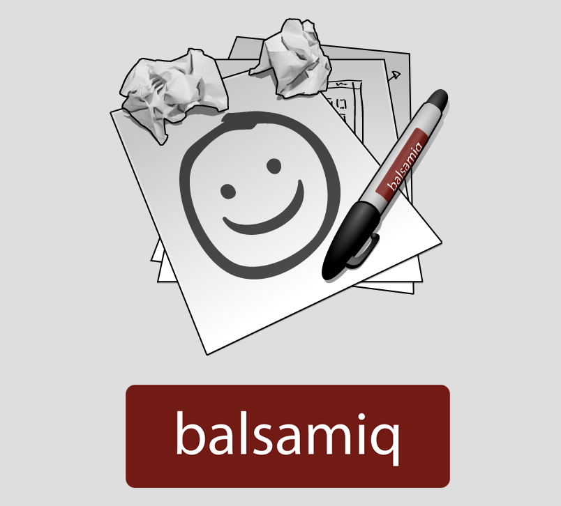

Hi, my Name's Nik and I want to do UX for you.
Based on the job description you provided, I think I'd be a great fit at MYOB and here are 5 reasons why.
Click anywhere to see why.
http://nikfenech.com
0476610395
nik.fenech@gmail.com
Strong in using various tools to create low to high level fidelity wireframes and prototypes for new products and features
My prototyping toolkit begins with pen and paper, and extends all the way to high fidelity software including the programs below.
Comfortable gathering feedback on product ideas, usability, design and features with clients and consumers.
I have experience using a wide range of methods to gather feedback, both from the client as well as the people using the product. The video below covers the highlights of a round of usability testing I facilitated for a project.
Good understanding of designing interactions and interfaces that run across multiple platforms and sites.
Both this job application and my personal portfolio are hand-coded and fully responsive. I also worked on designing responsive wireframes as part of my work for Many Hands, and worked on the responsive wireframes we presented as part of our solution.
A pro-active and highly motivated designer who can work collaboratively as part of a team.
I have experience working in small, agile teams where personal motivation is necessary to get the project completed. I thrive in environments where ideas flow freely and are able to develop to their full potential.

Proven capability to research ideas, drive direction and influence key stakeholders.
I possess thorough research abilities, outlined in this comparative analysis I did for social enterprise Many Hands.